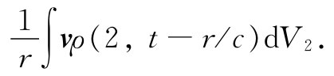
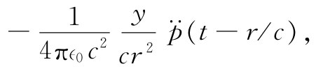
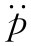
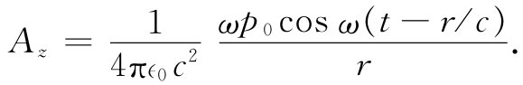
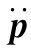
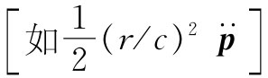
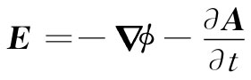

×r给出，它既垂直于矢径r，也垂直于加速度，如图21-4所示。一切都表明不错，那也是我们由式（21.1′）所得到的结果。
×r给出，它既垂直于矢径r，也垂直于加速度，如图21-4所示。一切都表明不错，那也是我们由式（21.1′）所得到的结果。导出一个运动的点电荷的场公式（21.1）的这个诺言，我们迄今还未曾实现。即使是已有的一些结果，但要把它导出来仍是一件相当复杂的事情。除了在这本讲义的第1卷之外，我们从未在已经发表的文献的任何地方找到过式（21.1） [1] 。因此，你可以看出它不容易导出（当然，一个运动电荷的场已经被写成许多种互相等价的其他形式）。这里，我们不得不把自己限制在几个例子中，这正是为了证实式（21.15）和（21.16）会给出与式（21.1）相同的结果。首先，将证明式（21.1）只在带电粒子的运动是非相对论性的条件下才给出正确的场（仅仅这一特殊情况就能处理我们过去关于光学方面所谈及的90%或更多的内容）。
我们考虑一小团电荷在一个小区域里以某种方式运动的情况，并将找出在远处的场。换一种说法，就是我们正在寻找距离点电荷任意远处的场，而该点电荷正以很小的幅度上下振动。由于光往往从诸如原子那种中性物体内发射出来，所以我们将认为摆动电荷q是处在一个静止不动的等值异号电荷附近。如果这两电荷中心间的距离为d，则这两电荷将具有偶极矩p=qd，这我们将认为是时间的函数。现在应该期待，如果靠近电荷对场进行观察，便无需担心那个推迟效应，电场将与我们以前对静电偶极子所算出的场完全相同——当然，要用到瞬时偶极矩p（t）。但若我们离开得很远，则应该在场中找到一项，它按1/r下降而又依赖于与视线垂直的电荷加速度。让我们来看看是否会得到这样的结果。
图21-2 点（1）处的势由对电荷密度ρ的积分给出
利用式（21.16）由算出矢势A开始。假设运动电荷处于一小团内，其中的电荷密度由ρ（x，y，z）给出，而在任一时刻整团东西以速度v运动，那么电流密度j（x，y，z）就等于vρ（x，y，z）。为了将来方便选取我们的坐标系使z轴指向v的方向，这时问题的几何结构就如图21-2所示。现在要求下面的积分：
若电荷小团的尺度比起r12 来确实很小，那么可令分母中的r12 等于r，即到该小团中心的距离，并把r取出积分符号之外。其次，也要令该式分子中r12 =r，尽管这实际上并不完全正确。其所以不对，是因为我们在小团的顶端取j与在该小团的底部取j在时间方面稍微有点不同。当在j（t-r12 /c）中令r12 =r时，我们是在同一个时刻（t-r/c）对整个小团取电荷密度。那只有当电荷的速度v远比c为小时才算是良好的近似。因此，我们正在做一种非相对论性计算，用ρv来代替j，积分式（21.17）便变成

由于所有电荷都有相同的速度，这个积分正好是v/r乘以总电荷q。但qv恰好就是∂p/∂t，即电偶极矩的时间变化率——那当然必须是在推迟时刻（t-r/c）算出来的。我们将把它写成ṗ（t-r/c）。因此对于矢势来说就得到
上述结果表明：变化偶极子中的电流会产生一个矢势，这矢势具有源强度为ṗ/（∈0 c2 ）的球面波的形式。
现在就可以由B=▽×A得到磁场。由于ṗ完全在z方向上，所以A只有一个z分量；在它的旋度中只有两个不等于零的微商。因此，Bx =∂Az /∂y及By =-∂Az /∂x。让我们首先来考察Bx ：
这类似于一个静态偶极子的势，随1/r2 而下降（因为对于给定的方向来说，y/r是个常数）。
式（21.20）中的第二项为我们提供一些新的效应。在进行微商后得
 （21.22）
式中 当然是指p对时间的二次导数。这一项来自对式中分子的微商，它是造成辐射的主要原因。首先，它描述了一个仅按1/r随距离下降的场。其次，它取决于电荷的加速度 。你可能开始明白，我们是如何打算得到一个像式（21.1′）那样的结果，而它是描述光辐射的。
让我们稍微详细一点检查一下这个辐射项是如何得来的——它是这么一个有趣而又重要的结果。由表示式（21.18）开始，它具有1/r的依存关系，因而除了式中分子上的那个推迟项外就像一个库仑势了。那么，当我们为获得场而对空间坐标取微商时，为什么并不恰好得到1/r2 的场——当然还会有那相应的时间推迟？
按照下述办法我们就能够看出其所以然：如让偶极子作正弦式上、下振动，那么就会有
p=pz =p0 sinωt
和 
若在某一给定时刻把作为r函数的Az 画成图，则可获得如图21-3所示的那种曲线。该峰的振幅会随1/r减小，但除此之外在空间还有一受1/r的包络线调制的振动。当我们对空间取微商它们将与该曲线的斜率 成正比。从图中我们看出有一些斜率比1/r曲线本身的斜率要峻峭得多。事实上，对于某一给定频率来说，那些峰的斜率显然正比于随1/r变化的波的振幅。因此，这就说明了该辐射项的下降率。
图21-3 对来自一振荡偶极子的球面波，在t时刻矢势A的正分量作为r函数而画成的图
事情的发生完全是由于当波向外传播时源对时间 的变化已变换成在空间里 的变化，而磁场则是取决于势的空间 微商。
让我们回过来完成对磁场的计算。关于Bx 已有式（21.21）和（21.22）两项，因而
现在让我们来看看这个公式。首先，若r很大，就只有那
项才重要。B的方向由
×r给出，它既垂直于矢径r，也垂直于加速度，如图21-4所示。一切都表明不错，那也是我们由式（21.1′）所得到的结果。
图21-4 一个振荡偶极子的辐射场B和E
现在，让我们来看看以往不熟悉的东西——即在源附近所发生的事情。在§14-7中我们曾求出关于电流元磁场的毕奥-萨伐尔定律。求得一个电流元jdV对于磁场贡献的量为：
若记得ṗ就是电流，则你知道这个公式看来很像式（21.23）中的第一项。但有一点不同。在式（21.23）中，电流必须在（t-r/c）时刻被算出，而这一点在式（21.24）中就没有出现。然而，事实上，对于小r来说式（21.24）还是十分精确的，因为式（21.23）中的第二 项有助于抵消掉第一项中的推迟效应。当r很小时这两项合起来 给出的结果很接近于式（21.24）。
关于这一点我们可以这样来认识：当r小时，（t-r/c）与t相差无几，因而可以把式（21.23）中的方括号展开成泰勒级数。对于第一项，
而第二项展开至r/c的同一级，则为
当求和时，含 的两项互相抵消，而留给我们是非推迟 电流ṗ也即ṗ（t）——加上（r/c）2 级的项或更高级的项如 ，对于r足够小以致ṗ在时间r/c内没有显著改变的情况，这些项的贡献将是十分微小的。
因此，式（21.23）给出的场很像瞬时理论中的场——比带有推迟的瞬时理论要接近得多，推迟的一级效应已被第二项所消除。该静态公式十分准确，其准确程度远比你可能想到的要高。当然，这补偿作用仅对接近源的点才有效。对于远离源的点这个修正变得十分差，因为时间延迟产生了很大的影响，所以我们得到重要的含1/r的辐射项。
仍然存在这样的问题，即算出电场并证明它与式（21.1′）相同。对于大的距离来说我们能够看出该答案将完全正确。我们知道，离源很远、有波传播的地方，E垂直于B（而且也垂直于r），如图21-4所示，并且cB=E。因此，E与加速度 成正比，正如式（21.1′）所料到的那样。
要完全得到在所有距离上的电场，我们需要先解出静电势。当计算A的电流积分以获得式（21.18）时，就曾做过这样一种近似，即把推迟项中r的微小变化忽略不计。这对于静电势来说将行不通，因为这样一来我们获得1/r乘以电荷密度的积分，那将是一个常数。这种近似太粗糙了。我们需要达到一个较高级的近似，但又要避免直接在有关较高级近似的计算中找麻烦，我们还是能够做某一种其他事情的——可以利用已找到的矢势从式（21.6）确定标势。在我们的情况下，A的散度只是∂Az /∂z——因为Ax 和Ay 都恒等于零。用上面求B的同样办法取微分，
积分常数大概相当于某个叠加上去的静场，那当然是有可能存在的静场。但对于我们所考虑的振荡偶极子来说，却不存在静场。
现在我们能够按照

求出电场E。由于计算冗长而不直截了当［只要你记住p（t-r/c）和它对时间的微商之所以与x，y，z有关，是通过推迟时间r/c来的］，所以我们将仅仅给出结果：
尽管看来它相当复杂，但这个结果还是容易解释的。矢量p* 就是已经被推迟、然后又对推迟“修正”的偶极矩，因而带有p* 的两项就恰恰给出当r很小时的静态偶极子场［见第6章式（6.14）］。当r大时，含 的项占了优势，而电场正比于电荷的加速度，且垂直于r，事实上即是指向 在垂直于r的平面上的投影。
这一结果与我们应用式（21.1）所能得到的结果相符。当然，式（21.1）会更加普遍，它适用于任何运动，而式（21.26）则仅仅适用于推迟时间r/c对于整个源都可以认为是一常数的那种小的运动。无论如何，我们现在已提供了整个以前有关光学讨论的基础（除了某些在第1卷第36章中曾经讨论过的内容以外），因为这种讨论全都与式（21.26）中的末项有关。接下来我们将讨论如何才能得到迅速运动的电荷的场（引导至第1卷第34章中的相对论性效应）。